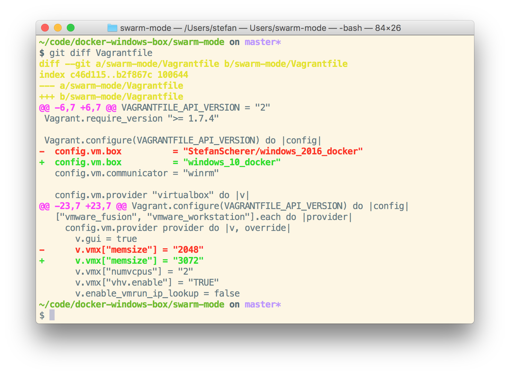
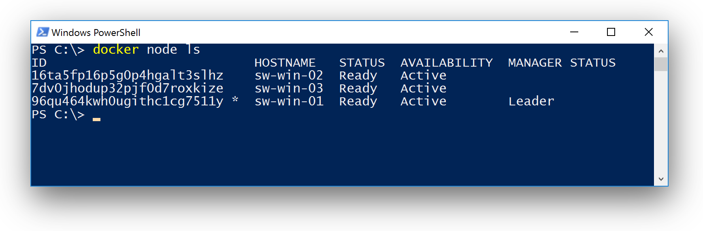
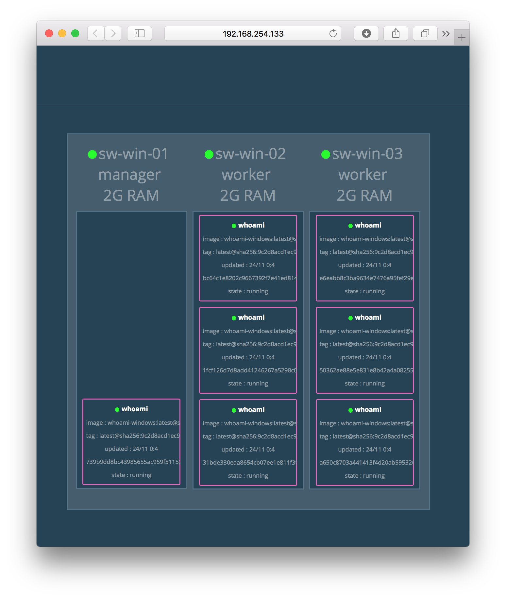
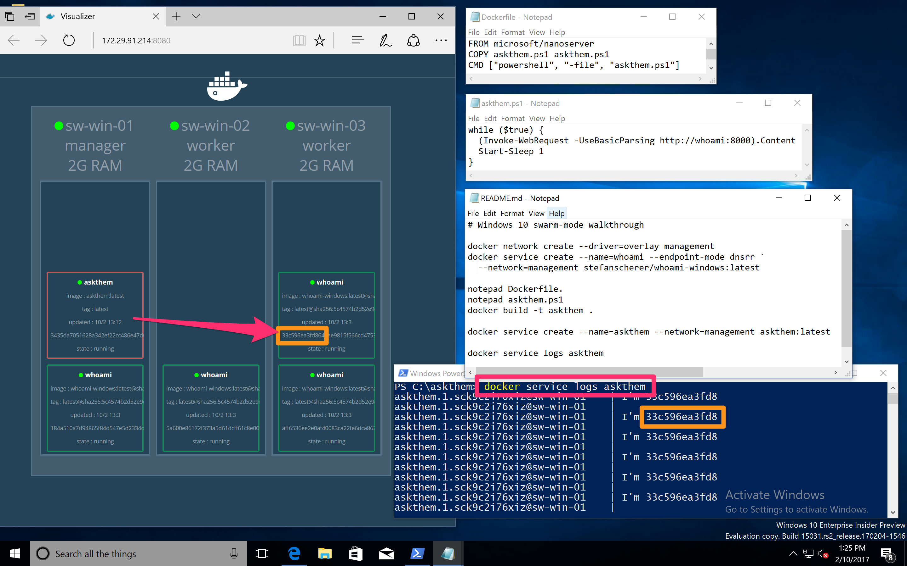

Last Friday I noticed a blog post that Overlay Network Driver with Support for Docker Swarm Mode Now Available to Windows Insiders on Windows 10. A long awaited feature to use Docker Swarm on Windows, so it's time to test-drive it.
Well you wonder why this feature is available on Windows 10 and not Windows Server 2016. Sure it will make more sense in production running a Docker Swarm on multiple servers. The reason is that the Insider preview is the fastest channel to ship new features. Unfortunately there is no equivalent for Windows Server editions.
So if you need it for Windows Server you have to wait a little longer. You can indeed test Swarm-Mode on Windows Server 2016 and Docker 1.13, but only without the Overlay network. To test Swarm-Mode with Overlay network you will need some machines running Windows 10 Insider 15031.
Preparation
In my case I use Vagrant to spin up Windows VM's locally on my notebook. The advantage is that you can describe some test scenarios with a Vagrantfile and share it on GitHub.
I already have played with Docker Swarm-Mode in December and created a Vagrant environment with some Windows Server 2016 VM's. I'll re-use this scenario and just replace the underlying Vagrant box.
So the hardest part is to build a Windows 10 Insider 15031 VM. The latest ISO file with Windows 10 Insider 15025 is a good starting point. You have to switch to the Fast Ring to fetch the latest updates for Insider 15031.
Normally I use Packer with my packer-windows templates available on GitHub to automatically create such Vagrant boxes. In this case I only have a semi-automated template. Download the ISO file, build a VM with the windows_10_insider.json template and update it to Insider 15031 manually. With such a VM, build the final Vagrant box with the windows_10_docker.json Packer template.
What we now have is a Windows 10 Insider 15031 VM with the Containers and Hyper-V features activated, Docker 1.13.1 installed and both Microsoft Docker images downloaded. All the time consuming things should be done in a Packer build to make the final vagrant up a breeze.
In my case I had to add the Vagrant box with
vagrant box add windows_10_docker ./windows_10_insider_15031_docker_vmware.box
Vagrant 1.9.1 is able to use linked clones for VMware Fusion, VirtualBox and Hyper-V. So you need this big Vagrant box only once on disk. For the Docker Swarm only a clone will be started for each VM to save time and disk space.
Create the Swarm
Now we use the prepared Vagrant environment and adjust it
git clone https://github.com/StefanScherer/docker-windows-box
cd docker-windows-box/swarm-mode
vi Vagrantfile
In the Vagrantfile I had to change only the name of the box after config.vm.box to the newly added Vagrant box. This is like changing the FROM in a Dockerfile.

I also adjusted the memory a little bit to spin up more Hyper-V containers.
But now we are ready to create the Docker Swarm with a simple
vagrant up
This will spin up three Windows 10 VM's and build the Docker Swarm automatically for you. But using linked clones and the well prepared Vagrant basebox it takes only some minutes to have a complete Docker Swarm up and running.
docker node ls
After all three VM's are up and running, go into the first VM and open a PowerShell terminal. With
docker node ls
you can check if your Docker Swarm is active.

Create a network
Now we create a new overlay network with
docker network create --driver=overlay sample
You can list all networks with docker network ls as there are already some others.
Create a whoami service
With this new overlay network we start a simple service. I've prepared a Windows version of the whoami service. This is a simple webserver that just responds with its internal container hostname.
docker service create --name=whoami --endpoint-mode dnsrr `
--network=sample stefanscherer/whoami-windows:latest
At the moment only DNS round robin is implemented as described in the Microsoft blog post. You cannot use to publish ports externally right now. More to come in the near future.
Run visualizer
To make it more visible what happens in the next steps I recommend to run the Visualizer. On the first VM you can run the Visualizer with this script:
C:\vagrant\scripts\run-visualizer.ps1
Now open a browser with another helper script:
C:\vagrant\scripts\open-visualizer.ps1
Now you can scale up the service to spread it over your Docker swarm.
docker service scale whoami=4
This will bring up the service on all three nodes and one of the nodes is running two instances of the whoami service.

Just play around scaling the service up and down a little bit.
Build and create another service
As I've mentioned above you cannot publish ports and there is no routing mesh at the moment. So the next thing is to create another service that will access the whoami service inside the overlay network. On Linux you probably would use curl to do that. I tried just a simple PowerShell script to do the same.
Two small files are needed to create a Docker image. First the simple script askthem.ps1:
while ($true) {
(Invoke-WebRequest -UseBasicParsing http://whoami:8000).Content
Start-Sleep 1
}
As you can see the PowerShell script will access the webserver with the hostname whoami on port 8000.
Now put this Script into a Docker image with this Dockerfile:
FROM microsoft/nanoserver
COPY askthem.ps1 askthem.ps1
CMD ["powershell", "-file", "askthem.ps1"]
Now build the Docker image with
docker build -t askthem .
We now can start the second service that consumes the whoami service.
docker service create --name=askthem --network=sample askthem:latest
You now should see one instance of the newly created askthem service. Let's have a look at the logs. As this Vagrant environment enables the experimental features of Docker we are able to get the logs with this command:
docker service logs askthem
In my case I had luck and the askthem service got a response from one of the whoami containers that is running on a different Docker node.

I haven't figured out why all the responses are from the same container. Maybe PowerShell or the askthem container itself caches the DNS requests.
But it still proves that overlay networking is working across multiple Windows machines.
More to play with
The Vagrant environment has some more things prepared. You also can spin up Portainer that gives you a nice UI to your Docker swarm. You can have a look at your Nodes, the Docker images, the containers and services running and so on.
I also found out that you can scale services in the Portainer UI by changing the replicas. Running Visualizer and Portainer side-by-side demonstrates that:

Conclusion
I think this setup can help you trying out the new Overlay network in Windows 10 Insider, and hopefully in Windows Server 2016 very soon as well.
As always, please leave a comment if you have questions or improvements or want to share your thoughts. You can follow me on Twitter @stefscherer.